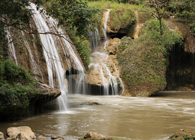

Oddar Meanchey is one of the smallest provinces of Cambodia located in the far Northwest bordering with Thailand.
Its name means Victory Province and the provincial capital is called Samraong. This area was formerly known as
Phanomsok, a province of Thailand, which was ceded to French Indochina in 1906, and now remains a part of Cambodia.
This province is also a recent creation that was carved out of Siem Reap Province, which the government did not control for much of the 1980s and 1990s.
The countryside is covered by the Dangrek Mountains (or escarpment, as they are sometimes called), which was an optimal
shelter for the Khmer Rouge to hide. It is a very remote province that has been a notorious place, because this is where
the nastiest of the nasty Khmer Rouge made their last stand. The diabolical Pol Pot and his seemingly bloodthirsty henchmen,
Nuon Chea, Ta Mok, Son Sen and Khieu Samphan holed up here for the last years of the Khmer Rouge's existence (another of the
henchmen, Ieng Sary, already worked out a surrender and defection deal with the government in 1996).
Pol Pot died mysteriously here, after a supposed power struggle within the power elite (he had Son Sen and
his family murdered) and after a controversial show trial. The debate focused on whether it was real or just
a sham staged for the outside world to try to legitimize remaining Khmer Rouge figures. The trial took place
in the power centre of the Khmer Rouge, the village of Anlong Veng. Pol Pot died mysteriously after he was sentenced to house arrest and the international community began real efforts (for the first time ever) to capture and put this butcher on trial.
His henchmen had more than enough reasons to believe that he wasn't dead at that point, because a Pol Pot on trial, as the ringleader most responsible for the genocide wrought upon his fellow countrymen, would probably have tried to shift portions of the blame (rightfully in the case of these guys) to the rest of the power elite.
The Khmer Rouge kept fragmenting after that and Nuon Chea and Khieu Samphan worked out a surrender-amnesty deal with the Cambodian government and Ta Mok (also called The Butcher) was subsequently captured and is still awaiting a trial in Phnom Penh. As of March 2000, the United Nations and the Cambodian government finally seem set to come up with an agreement on putting the top surviving members of the Khmer Rouge regime on trial in Cambodia, with assistance from and in a partnership with the International Community.
Stay tuned though, as this has been a real political football with seemingly more concern for one-upsmanship and personal gain than justice for the dead and surviving victims of Khmer Rouge brutality.
The international border is 14.5 km from the circle in Anlong Veng (Anlong Veng-Choam-Choam- Srawngam and O Smach-Chong Jom). There are plenty of tanks and tank shells to look at along the way and also a strange site in the form of a boulder that had Khmer Rouge soldiers carved out of the sides of it- they have all been decapitated since government forces took control of Anlong Veng. Anyway, it's an interesting little ride to a low-lying part of the Dangkrek Mountains. The road is in fairly good shape with the exception of the climb up a rocky hillside near the border.

Map

Somrong

Champei waterfall or Laang Ta Thong waterfall is 35 kilometers northeast of Odda Meanchey provincial town. A natural site, is includes a huge boulder that measures 500 meters squar. There is also a mountain valley on both sides of the waterfall and the surrounding area is full of flowers, particulary orchids.
About 500 meters from the waterfall, there is a natural and cultural site organized by the monks who meditate at the site. Known as Ruot Champei, it has a number of statues that describe the life process from birth until death, as well as other religious and wildlife statues.
The provincial tourism office is organizing and developing other attractions in Oddar Meanchey province, including: Tonle Sar site, O'Angkrong site, Sneung temple, Tropiang Baray, Por Temple, Kuy Plantation, Beung Snor, Tumnub Thmei and Toul Kruoy, a killing field during the Khmer Rouge regime and the site of a Khmer Rouge prison.
Champei waterfall or Laang Ta Thong waterfall is 35 kilometers northeast of Odda Meanchey provincial town. A natural site, is includes a huge boulder that measures 500 meters squar. There is also a mountain valley on both sides of the waterfall and the surrounding area is full of flowers, particulary orchids.
About 500 meters from the waterfall, there is a natural and cultural site organized by the monks who meditate at the site. Known as Ruot Champei, it has a number of statues that describe the life process from birth until death, as well as other religious and wildlife statues.
The provincial tourism office is organizing and developing other attractions in Oddar Meanchey province, including: Tonle Sar site, O'Angkrong site, Sneung temple, Tropiang Baray, Por Temple, Kuy Plantation, Beung Snor, Tumnub Thmei and Toul Kruoy, a killing field during the Khmer Rouge regime and the site of a Khmer Rouge prison.
 O'Smach is on the Cambodian-Thai border, about 41 kilometers north of Oddar Meanchey provincial town. The town features a resort which includes a number of casinos, good restaurants and luxury hotels. The resort has been organized by the Royal Group and VIP Shop Group companies.The O Smach Resort has an impressive entry complete with a giant glowing green lotus set in a fountain. The resort has beautifully maintained grounds which feature, for some unknown reason, two military armoured vehicles decorated with Christmas lights.
The O Smach resort has a casino and 198 hotel rooms and suites. Room facilities include satellite tv, aircon, en suite, mini bar etc.The resort facilities include a restaurant, 24 hour coffee shop, swimming pool, gym, sauna and massage parlour. Across the road is the Royal Hill Resort, offering yet another casino and hotel complex. Prices and facilities are similar to those at the O Smach Resort.The gaming rooms and interior of the Royal Hill Resort are rather utilitarian, in stark contrast with the impressive entry arch way and shrine in the grounds.O Smach in Cambodia is located 100 metres over the border checkpoint at Kap Choeng, Thailand. It is 68 Km south of Surin and 440 Km from Bangkok. From O Smach it is 150 Km to the world famous Angkor Wat ruins near the town of Siem Reap.
As at 2006 the road to Siem Reap was poor and the journey can take all day by truck. A road is being constructed to Siem Reap which will improve this journey markedly.If you are entering Thailand from Cambodia at this border crossing most nationalities will be granted a visa on arrival at no cost. Entering Cambodia from Thailand you are required to pay 1000 baht for a 30 day visa. The border point re opened in 2002 after being closed for a number of years to due fighting on the Cambodian side. O Smach was the scene of heavy fighting in 1997 as the remnants of Sihanouk?s forces battled opposing forces. Peace came in 1998 and the military evicted local residents and sold off the land to the casino developers.
The border at O'smach is definetly open for foreigners. Exited Cambodia there with one Thai registered bike and one Cambodian registration. Thai 30 day visas on entry and normal customs , but quick as no one goes thru with vehicles as they park on the Thai side a walk/songtow to the casinos just across the border.On the Thai side it is called Chong Chom The border post can be found by following Higway 214 south from Surin. From the Cambodian side the road from Anlong Veng to O'smach is very good, 100-120 kmh easy, demining going on along the road.The road up the escarpment is also good.Also a good road north from the Sisophon-Siem Riep road.An alternate border post for those sick of Aranyapratet.
Also noticed new tempory export procedures at Aran, now need to stamp passport out first, then back to customs, then to immigaration again for an airline crew(yes!) list , 2 copies of everything (B50 for copies-no receipt), then exit at immigration. Takes a lot longer than the previous 5 minutes. Cambodian side, if you stop at the customs they want to see a Carnet, which of course you can't get for a Thai rego bike.After a while they just stamp the back of the Thai export paper if you agree to come back thru there on the way back, I never have because you normally can't find anyone or I'm in a hurry. Interesting to note that there was no Cambodian customs at O'smach.
O'Smach is on the Cambodian-Thai border, about 41 kilometers north of Oddar Meanchey provincial town. The town features a resort which includes a number of casinos, good restaurants and luxury hotels. The resort has been organized by the Royal Group and VIP Shop Group companies.The O Smach Resort has an impressive entry complete with a giant glowing green lotus set in a fountain. The resort has beautifully maintained grounds which feature, for some unknown reason, two military armoured vehicles decorated with Christmas lights.
The O Smach resort has a casino and 198 hotel rooms and suites. Room facilities include satellite tv, aircon, en suite, mini bar etc.The resort facilities include a restaurant, 24 hour coffee shop, swimming pool, gym, sauna and massage parlour. Across the road is the Royal Hill Resort, offering yet another casino and hotel complex. Prices and facilities are similar to those at the O Smach Resort.The gaming rooms and interior of the Royal Hill Resort are rather utilitarian, in stark contrast with the impressive entry arch way and shrine in the grounds.O Smach in Cambodia is located 100 metres over the border checkpoint at Kap Choeng, Thailand. It is 68 Km south of Surin and 440 Km from Bangkok. From O Smach it is 150 Km to the world famous Angkor Wat ruins near the town of Siem Reap.
As at 2006 the road to Siem Reap was poor and the journey can take all day by truck. A road is being constructed to Siem Reap which will improve this journey markedly.If you are entering Thailand from Cambodia at this border crossing most nationalities will be granted a visa on arrival at no cost. Entering Cambodia from Thailand you are required to pay 1000 baht for a 30 day visa. The border point re opened in 2002 after being closed for a number of years to due fighting on the Cambodian side. O Smach was the scene of heavy fighting in 1997 as the remnants of Sihanouk?s forces battled opposing forces. Peace came in 1998 and the military evicted local residents and sold off the land to the casino developers.
The border at O'smach is definetly open for foreigners. Exited Cambodia there with one Thai registered bike and one Cambodian registration. Thai 30 day visas on entry and normal customs , but quick as no one goes thru with vehicles as they park on the Thai side a walk/songtow to the casinos just across the border.On the Thai side it is called Chong Chom The border post can be found by following Higway 214 south from Surin. From the Cambodian side the road from Anlong Veng to O'smach is very good, 100-120 kmh easy, demining going on along the road.The road up the escarpment is also good.Also a good road north from the Sisophon-Siem Riep road.An alternate border post for those sick of Aranyapratet.
Also noticed new tempory export procedures at Aran, now need to stamp passport out first, then back to customs, then to immigaration again for an airline crew(yes!) list , 2 copies of everything (B50 for copies-no receipt), then exit at immigration. Takes a lot longer than the previous 5 minutes. Cambodian side, if you stop at the customs they want to see a Carnet, which of course you can't get for a Thai rego bike.After a while they just stamp the back of the Thai export paper if you agree to come back thru there on the way back, I never have because you normally can't find anyone or I'm in a hurry. Interesting to note that there was no Cambodian customs at O'smach.